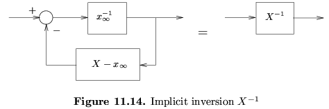

|
You are here : Control System Design - Index | Book Contents | Chapter 11 11. Dealing with ConstraintsPreviewAn ubiquitous problem in control is that all real actuators have limited authority. This implies that they are constrained in amplitude and/or rate of change. If one ignores this possibility then serious degradation in performance can result in the event that the input reaches a constraint limit. This is clearly a very important problem. There are two ways of dealing with it:
Option (i) above is the most common strategy. However, this implies that either the actuator was oversized in the first place or one is unnecessarily compromising the performance. Anyway, we will see below that option (ii) is quite easy to achieve. This chapter gives a first treatment of option (ii) based on modifying a given linear design. This will usually work satisfactorily for modest violations of the constraint (up to say 100%). If more serious violations of the constraints occur then we would argue that the actuator has been undersized for the given application. We will also show how the same ideas can be used to avoid simple kinds of state constraint. Here we assume that the control laws are bi-proper and minimum phase. This will generally be true in SISO systems. Bi-properness can be achieved by adding extra zeros if necessary. Techniques that do not depend on those assumptions will be described in section 18.? of Chapter 18. Also, in a later chapter (Chapter 25) we will describe another technique for dealing with control and state constraints based on constraint optimal control theory. These latter techniques are generally called "model predictive control", and one of the major success stories in modern control. Summary

|